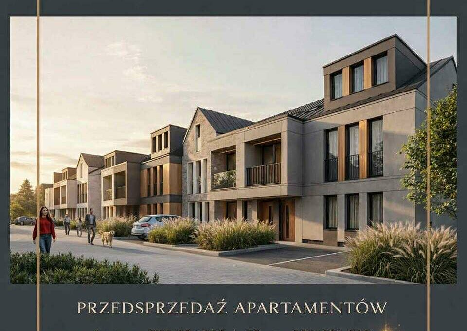
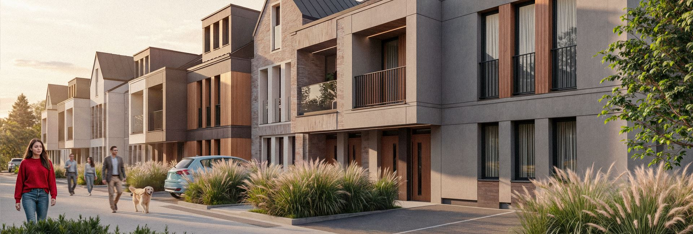
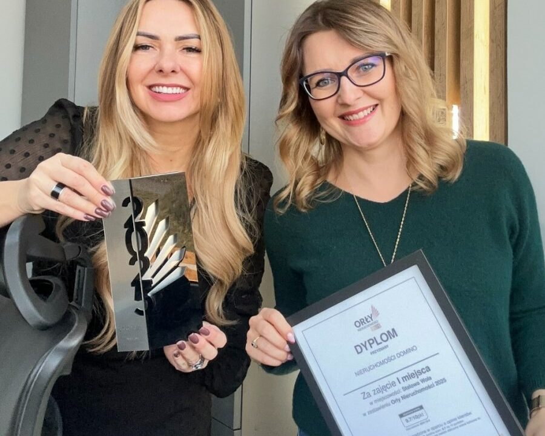
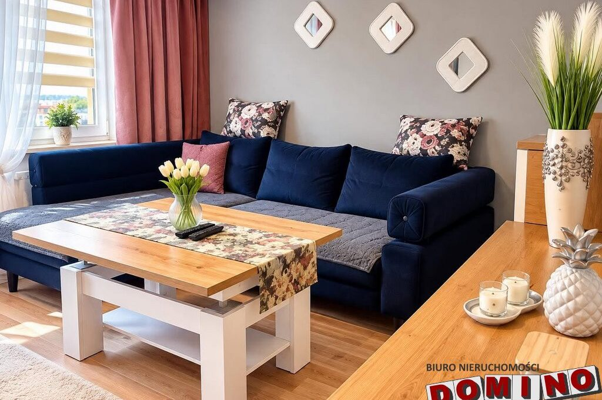
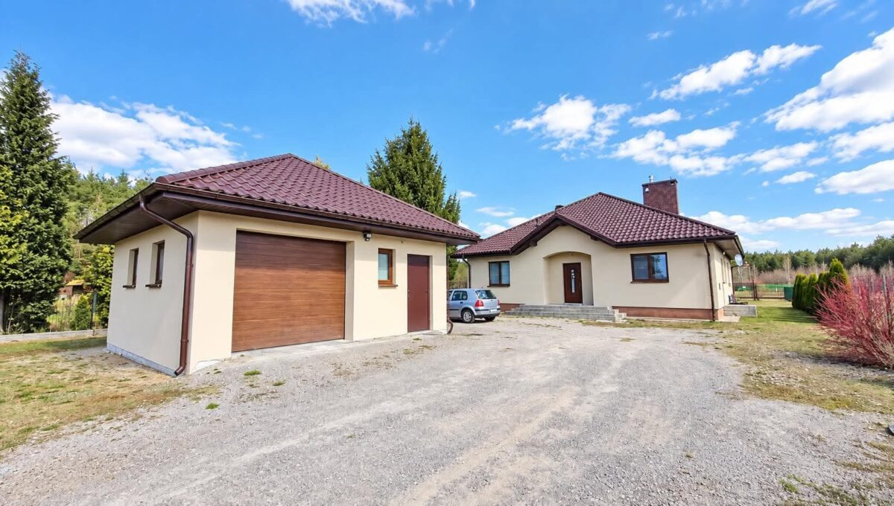
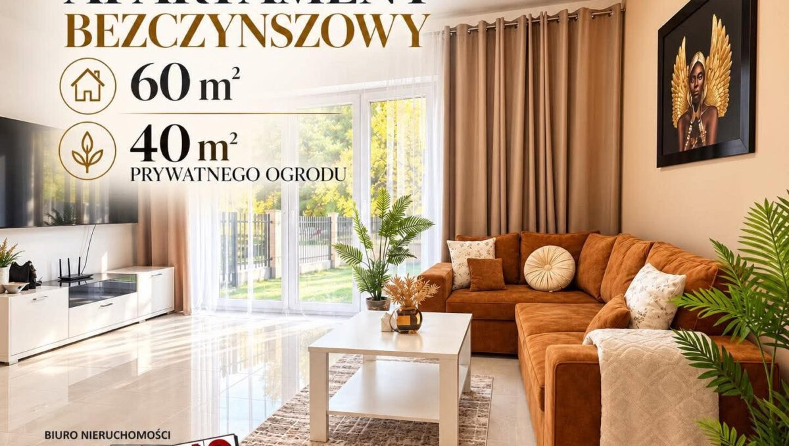
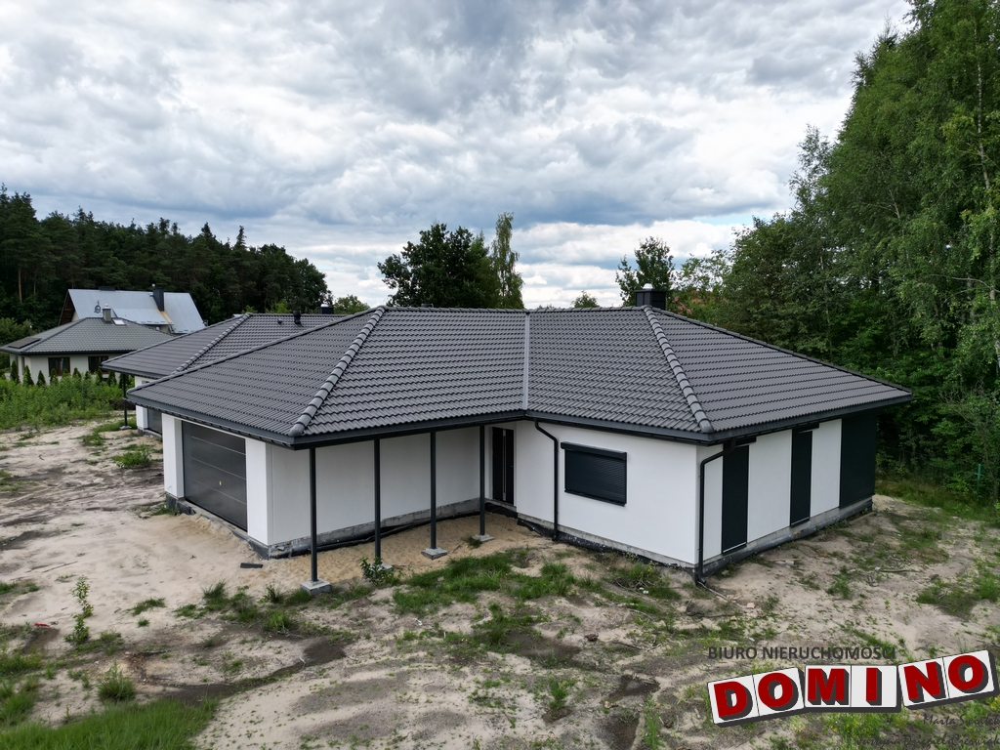
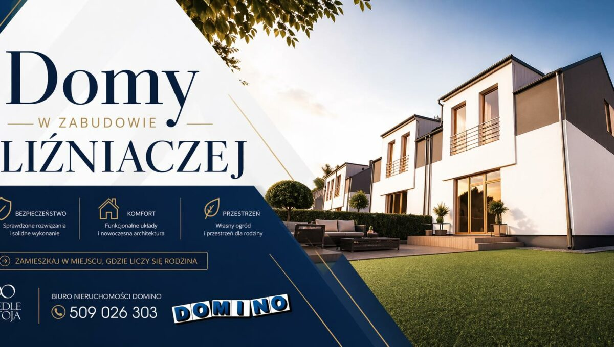
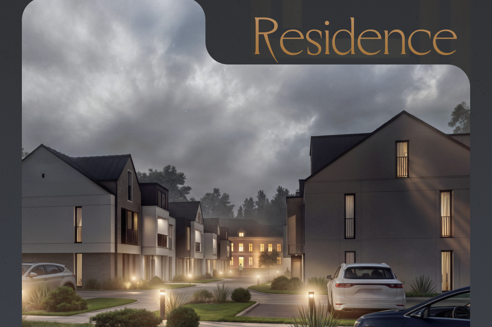
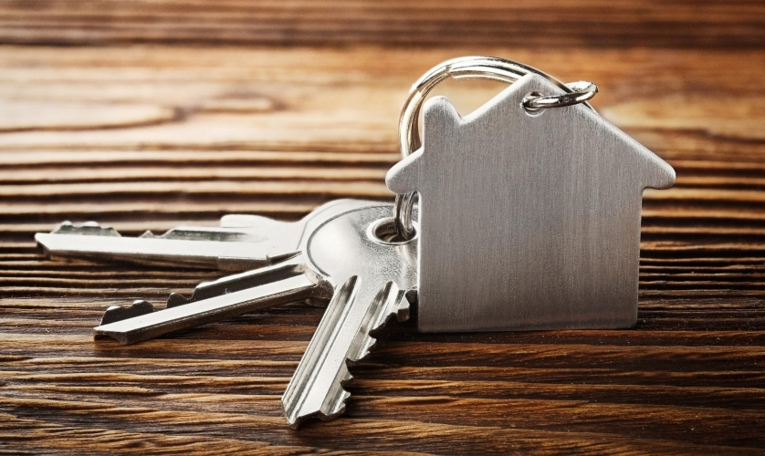

Rozwadów Residence, apartament z tarasem
Stalowa Wola · 99,5 m² · 5 pokoi
700 000 złSTALOWA WOLA I OKOLICE
Biuro Nieruchomości DOMINO w Stalowej Woli. Od 2012 roku sprzedaż, zakup i wynajem mieszkań, domów, lokali i działek, z pełnym wsparciem przy formalnościach.
Kupno albo sprzedaż domu to jedna z najważniejszych decyzji w życiu. Od 2012 roku prowadzimy przez nią klientów ze Stalowej Woli i okolic, od pierwszej rozmowy aż po akt notarialny.
Dlatego do każdej podchodzimy osobno. Analizujemy rynek, dobieramy strategię i docieramy do osób, które naprawdę szukają takiego miejsca.

Tyle wynosi standardowa prowizja za pośrednictwo. Warunki ustalamy na samym początku współpracy.
Poznajemy nieruchomość, ustalamy plan sprzedaży i przygotowujemy ofertę.
Publikujemy ogłoszenia w internecie i organizujemy spotkania z kupującymi.
Pomagamy skompletować dokumenty i doprowadzamy sprawę do aktu notarialnego.
Każdy klient, prywatny czy firmowy, dostaje rozwiązanie dopasowane do siebie.
Szybkie działanie i dobry kontakt na każdym etapie sprawy.
Konkretne wskazówki i odpowiedzi na wszystkie pytania.
Klienci wracają do nas przy kolejnym kupnie, sprzedaży i najmie.


Stalowa Wola · 99,5 m² · 5 pokoi
700 000 zł
Stalowa Wola · 67 m² · 3 pokoje · 6. piętro
469 000 zł
149 m² · działka 14,5 ar · 3 pokoje + salon
819 000 zł
Stalowa Wola · 60,15 m² · 4 pokoje
599 000 zł
160 m² · działka 1000 m² · 4 lub 5 pokoi
830 000 zł
Stalowa Wola · 83 m² · 4 pokoje
580 000 złWspółpracujemy z kancelariami notarialnymi, rzeczoznawcami i partnerami finansowymi, żeby cały proces był formalnie bezpieczny.
Dopilnujemy dokumentów i terminu aktu.
Rzetelna ocena wartości nieruchomości.
Wsparcie partnerów finansowych przy kredycie.
Aktualności z biura i praktyczne informacje z rynku nieruchomości.

Rozmowa o naszej pracy i nowym osiedlu dla portalu Stalowemiasto.pl.
Znów zdobyliśmy wyróżnienie w plebiscycie Orły Nieruchomości GOLD.

Na czym polega ta forma najmu i dlaczego wybiera ją coraz więcej właścicieli.
Planujesz sprzedaż lub zakup?
Biuro Nieruchomości DOMINO
Marta Świątek
Justyna Dzięgiel-Czerwiak
al. Jana Pawła II 25/2
Budynek TKB, parter
37-450 Stalowa Wola
pon.–pt. 9.30–17.00